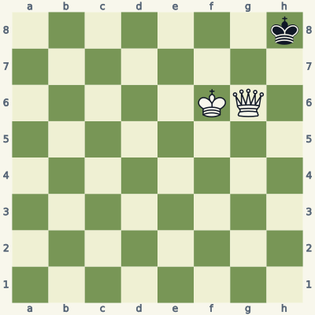
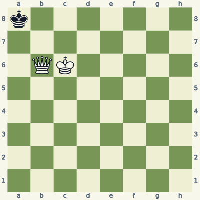
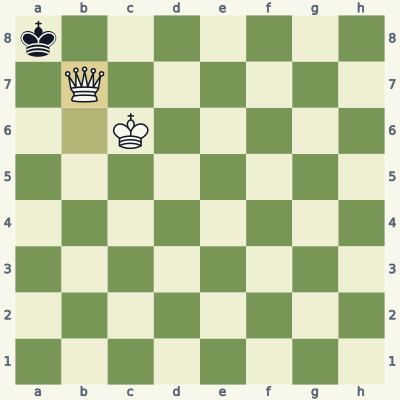
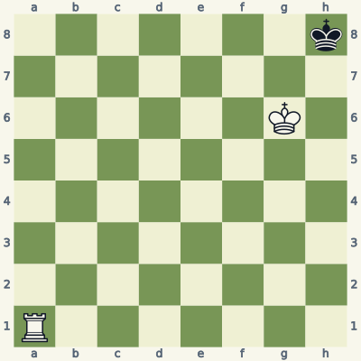
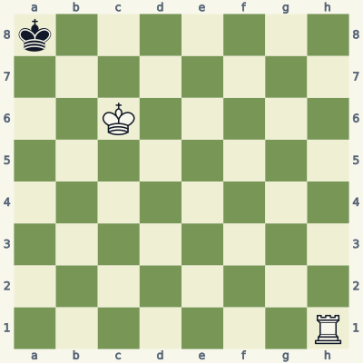
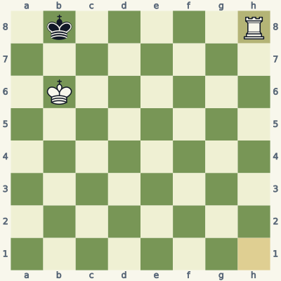
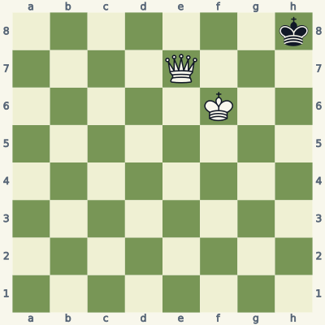
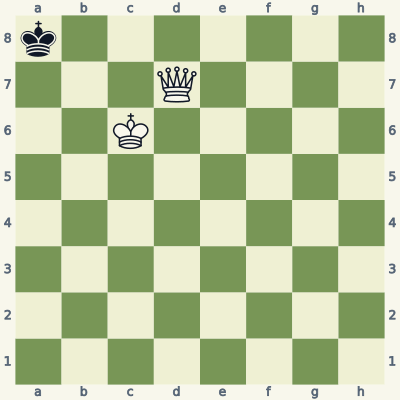
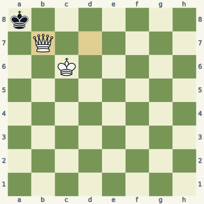

For players who know how the pieces move. Read the model, try the exercise without the answer, then explain the result aloud. Use a board and make the moves one at a time. Spend about 20 minutes per lesson; repeat it tomorrow and a week later.
Check the immediate threat, choose candidates, test the opponent's checks and captures, then inspect the final position. Some questions ask for a safe move or correct diagnosis rather than a unique best move. Sample replies illustrate ideas unless the explanation says they are forced.
Notation and replay help
K king · Q queen · R rook · B bishop · N knight. A pawn move has no piece letter. Nf3 means knight to f3; Rxc6 means rook captures on c6; + means check; # means mate; O-O means kingside castling; e8=Q means promotion. A line beginning 1... starts with Black. Diagrams face the player to move.
The PGN download loads starting positions and sample lines into a chess program. Position codes (FEN) let you recreate individual boards. The PDF and website work without an account.
Lesson 08.1
Queen and king close the cage
A queen can cover many escape squares, but a close-range mating queen often needs the king's protection. Prove mate by checking the defender's complete set of replies.

Model A · White to movePosition code7k/8/5KQ1/8/8/8/8/8 w - - 0 1
Read the position
Black's king is on h8 at the edge of the board.
White's king on f6 protects g7.
The queen can move from g6 to g7 without crossing another piece.
1. Qg7#
Qg7# places the queen next to the king with protection. The queen checks along g7-h8 and covers h7 and g8. The black king cannot capture the queen on g7 because White's king attacks that square.
There is no piece available to capture or block the check. The position is mate because the king is in check and has no legal response. Verify those two facts separately; merely trapping a king can also produce stalemate.
Exercise B · White to move
Take five minutes. Write your reason and the opponent's reply before opening the answer.

Inspect what changed from the model.Position codek7/8/1QK5/8/8/8/8/8 w - - 0 1
Find the matching mating move on the other side of the board.
Why can Black not capture the queen?
Which squares around a8 does the queen cover?
Read the full explanation
Qb7# mirrors the model. The queen moves from b6 to b7 and checks the king on a8 diagonally.
White's king on c6 protects b7. Capturing the queen would move Black's king into an attacked square.
The queen covers a7, b8 and its own defended square b7. Those are all three on-board neighboring squares available from a8. The king is in check, so no legal move means mate.
1. Qb7#

Position after the sample line; the last move is highlighted.
Score your explanation: 1 point for the fact and 1 for its consequence in each answer, out of 6. At 4 or below, replay the model and revisit tomorrow.
Where the idea can fail
An unprotected queen placed next to the enemy king may simply be captured. Always name the piece protecting the mating queen, even when the pattern looks familiar.
Use it in your own games
Rebuild both positions from memory. For each mating move, point to every neighboring square of the losing king and explain why it cannot move there.
The rook cuts a rank or file, while the king controls the escape squares beyond that line. Rook mate is a coordination task, not a sequence of random checks.

Model A · White to movePosition code7k/8/6K1/8/8/8/8/R7 w - - 0 1
Read the position
White's king on g6 controls f7, g7 and h7.
The rook can reach a8 along the clear a-file.
A rook on a8 would check across the eighth rank.
1. Ra8#
Ra8# checks the king on h8. The rook covers g8, and White's king covers g7 and h7. Black has no piece that can block the rook's line or capture it.
The king does the work that the rook cannot: it controls the row of escape squares below the checking rank. If the white king were farther away, the same rook check could let the defender escape instead of ending the game.
Exercise B · White to move
Take five minutes. Write your reason and the opponent's reply before opening the answer.

Inspect what changed from the model.Position codek7/8/2K5/8/8/8/8/7R w - - 0 1
Why does Rh8+ immediately fail to mate?
What king move prepares the mating net?
After the forced king reply, give the mate and explain the division of work.
Read the full explanation
After Rh8+, Black can play ...Ka7. White's king on c6 does not attack a7, so the defender can leave the back rank.
Kb6 controls a7 and b7. Black then has only ...Kb8: a7 is attacked by the king and b7 is also attacked.
Rh8# now checks along the eighth rank. The rook controls a8 and c8, while the king on b6 controls a7, b7 and c7. The mating net is complete because king and rook cover different escape routes.
1. Kb6 Kb8 2. Rh8#

Position after the sample line; the last move is highlighted.
Score your explanation: 1 point for the fact and 1 for its consequence in each answer, out of 6. At 4 or below, replay the model and revisit tomorrow.
Where the idea can fail
Do not give the final rook check before your king controls the exit. A check can release the opposing king from the edge if you have not completed the cage.
Use it in your own games
Place the defending king on a different edge square. Before checking with the rook, mark the escape row and move your king to control it.
Checkmate requires check. Stalemate occurs when the player to move is not in check but has no legal move; it ends the game as a draw.

Model A · White to movePosition code7k/4Q3/5K2/8/8/8/8/8 w - - 0 1
Read the position
Black's king on h8 has only three neighboring squares on the board.
Qg7 gives check and is protected by White's king.
Qf7 covers the exits without attacking h8.
1. Qg7#
Qg7# wins for the same reason as the first lesson: it checks, covers the exits and cannot be captured. Verify that the move attacks the king itself, not just the surrounding squares.
Compare Qf7?. The queen covers g8, g7 and h7, so Black has no move. But h8 is not attacked. With no other black pieces or pawns to move, the result is stalemate. A huge material advantage does not override that rule.
Exercise B · White to move
Take five minutes. Write your reason and the opponent's reply before opening the answer.

Inspect what changed from the model.Position codek7/3Q4/2K5/8/8/8/8/8 w - - 0 1
Find a mating move from this new queen square.
What is wrong with Qc7?
Explain the result of each move using the two required facts.
Read the full explanation
Qb7# is mate. The queen attacks a8 and is protected on b7 by the king on c6.
Qc7 produces stalemate. It covers a7 along the seventh rank, b8 diagonally and b7 along the rank, but does not attack a8.
After Qb7, Black is in check and has no legal reply: mate. After Qc7, Black is not in check and has no legal move: draw by stalemate. The absence of a legal move alone does not tell you which result applies.
1. Qb7#

Position after the sample line; the last move is highlighted.
Score your explanation: 1 point for the fact and 1 for its consequence in each answer, out of 6. At 4 or below, replay the model and revisit tomorrow.
Where the idea can fail
Near a bare king, every quiet queen move deserves a stalemate check. Ask "Is the king in check?" before asking "Can the king move?"
Use it in your own games
Set up a queen-versus-king ending. For each candidate move, label the resulting position "check," "mate," "stalemate," or "none" before moving on the board.
All six starts and listed moves in this book were checked for legality. Stockfish 19 reviewed candidates at depth 18. Available endings with seven or fewer pieces were checked against the Lichess tablebase, including every move of the demonstrated endgame lines. A strategic sample is not a claim of unique best play.
These original, AI-assisted explanations were written around the positions and revised after checking. The lesson data and validation notes make the examples inspectable. Further reading and practice: